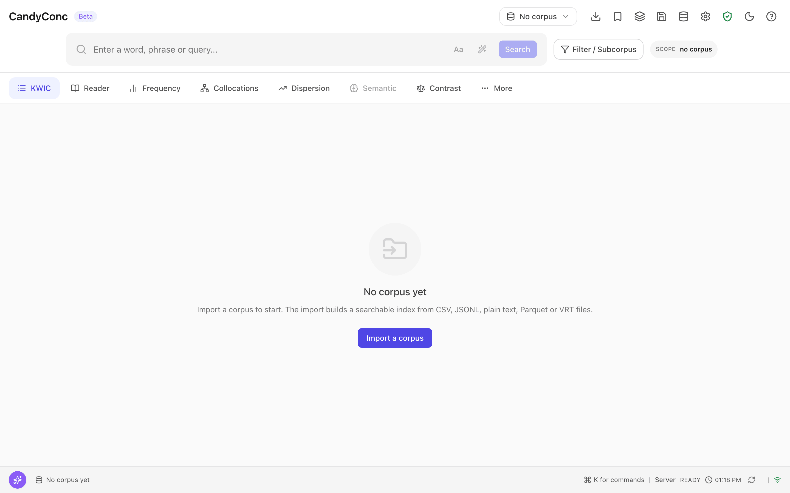

Install CandyConc#
CandyConc runs on your own computer as a local server with a web interface that opens in your browser. There are three ways to install it:
Way |
For |
What you need |
|---|---|---|
most users, no Python experience needed |
macOS on Apple silicon |
|
people who manage their own Python environments, and automation |
Python 3.11 to 3.14 on macOS on Apple silicon |
|
changing CandyConc itself |
a clone of the repository, Node.js, a C compiler |
These binary installation paths describe the local macOS arm64 candidate. Intel macOS and Linux are configured in the release workflow but have no built or verified artifacts for this candidate. Windows is not supported. The full matrix of systems, processors, and Python versions is in Supported platforms.
Install the application bundle#
The application bundle is a folder that contains its own Python, CandyConc,
the web interface, all dependencies, and the two sample corpora of this
documentation in the folder examples. It needs no system Python, no
compiler, and no Node.js, and it runs without a network connection.
Before you begin#
A computer with macOS 13 or later on Apple silicon.
About 190 MB for the download and about 660 MB for the unpacked folder. These are the sizes of the macOS bundle for Apple silicon. Importing a corpus needs additional free disk space, see Import a corpus.
Terminal on macOS.
A current web browser.
Download and unpack#
Under Assets of the newest release, download the archive for your system and the file
SHA256SUMS:System
Archive
macOS on Apple silicon (M1 and later)
CandyConc-VERSION-macos-arm64.tar.gzVERSIONis the version number of the release, for example0.1.1. The archives named Source code are created by GitHub from the repository. They are not an installable application.Optional: In a terminal, go to the folder with the two downloaded files and check the archive against its checksum:
shasum -a 256 --check --ignore-missing SHA256SUMS
The output names the archive followed by
OK.Unpack the archive:
tar -xzf CandyConc-*-macos-arm64.tar.gz
The result is a folder named like the archive, for example
CandyConc-0.1.1-macos-arm64. You can move this folder anywhere. Your corpora and settings are not stored inside it.Remove the quarantine flag from the folder:
xattr -dr com.apple.quarantine CandyConc-*-macos-arm64
The bundle is not signed or notarized by Apple. A browser marks every downloaded file with a quarantine flag, and macOS then refuses to run the Python inside the bundle. If you downloaded the archive with
curlin a terminal, skip this step, becausecurlsets no quarantine flag.
Start CandyConc#
Go to the unpacked folder and start CandyConc:
cd CandyConc-*-macos-arm64 ./candyconc
The output is similar to the following:
Web interface: http://127.0.0.1:8010/ Corpus: none yet. Import one in the web interface (Corpora) or with: candy import --help Data: /Users/you/.candyconc Copilot: no language model configured (optional, see Settings > Model connection) Press Ctrl+C to stop.
Your browser opens the web interface at the address in the line Web interface. If port 8010 is taken, CandyConc uses the next free port and prints it. If no browser window opens, open the printed address yourself.
Leave the terminal open while you work. To stop CandyConc, press Control+C in the terminal.
The first start shows the message No corpus yet and the button
Import a corpus. CandyConc listens only on 127.0.0.1, so no other
computer can reach it. Continue with First results to
import the English sample corpus and run a first analysis.


The interface after the first start, before a corpus is imported.#
Choose the interface language#
The interface is German when the language of your browser is German, and English otherwise. To change it, click Settings (the gear icon in the top bar), open General, and choose the language under Language. In the German interface these labels are Einstellungen, Allgemein, and Sprache. The choice applies at once and is kept for the next start.
Commands of the bundle#
Run these commands in the unpacked folder:
Command |
What it does |
|---|---|
|
Starts CandyConc and opens the web interface. Options such as |
|
Imports a corpus from a file. |
|
Downloads a spaCy annotation pipeline, for example |
|
Shows where CandyConc keeps your data and where it reads its configuration file. |
|
Shows the versions of CandyConc and spaCy and the location of the bundle. |
|
Removes the bundle folder after a confirmation. Your data stays. |
What CandyConc downloads#
CandyConc starts and works without a network connection. It downloads something only when you ask for it:
Annotation pipelines. Lemmas, parts of speech, and dependency relations come from a spaCy pipeline.
./candyconc pipeline NAMEdownloads one from the spaCy model releases on GitHub and stores it in your data folder, so it survives an update of the bundle. Sizes of the downloads:en_core_web_sm12.8 MB,en_core_web_md33.5 MB,de_core_news_sm14.6 MB,de_core_news_md44.4 MB. A corpus imported withblank:en(or another language code) is only tokenized and needs no download. See Choose language and annotation layers.The copilot connects only to the model endpoint that you configure. See Connect a language model.
Semantic indexes on Apple silicon download a runtime and an embedding model when you start building one. See Find similar words and passages.
What stays on your computer and what leaves it is described in Data and privacy.
Where your data lives#
CandyConc keeps corpora, subcorpora, annotations, saved analyses, settings,
downloaded pipelines, and logs in the folder .candyconc in your home
folder. The environment variable CANDYCONC_HOME moves it elsewhere. The
bundle folder itself holds no user data, so you can replace or delete it
without losing your work. ./candyconc paths prints every location. See
Where your data lives.
Update or remove the bundle#
To update, download and unpack the new archive, start the new
./candyconc, and delete the old folder. Your corpora and settings stay in
your data folder. To remove CandyConc, run ./candyconc uninstall. Details,
including how to remove your data as well, are in
Upgrade CandyConc and
Uninstall CandyConc.